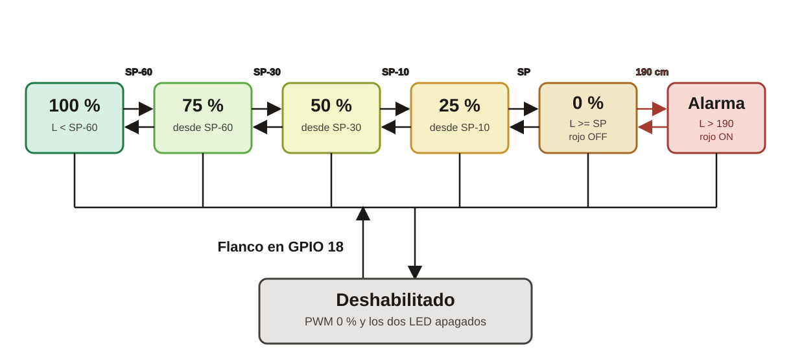

Transiciones del control de nivel
Ejercicio 2 · ESP32 · Nicolás Muñoz y Fredy Garcia
Cada 150 ms se vuelve a clasificar.
Lo único que queda guardado es habilitado.
1. De la pata del chip a la salida
GPIO 2 rojo
GPIO 17 PWM
GPIO 18, con pull-up, se lee en bajo al oprimir. Un flanco de bajada con más de 200 ms desde el anterior invierte habilitado.
2. Orden en que se prueban las condiciones
En cada vuelta gana la primera fila que resulta verdadera. Las de abajo no se miran.
| Orden | Condición | PWM | Verde | Rojo |
|---|---|---|---|---|
| 1 | habilitado = falso | 0 % | OFF | OFF |
| 2 | L > 190 | 0 % | ON | ON |
| 3 | L ≥ SP | 0 % | ON | OFF |
| 4 | SP − 10 ≤ L < SP | 25 % | ON | OFF |
| 5 | SP − 30 ≤ L < SP − 10 | 50 % | ON | OFF |
| 6 | SP − 60 ≤ L < SP − 30 | 75 % | ON | OFF |
| 7 | L < SP − 60 | 100 % | ON | OFF |
El límite pertenece a la banda de arriba en la tabla: L = SP − 60 ya es 75 %, L = SP ya es 0 %, L = 190 todavía es la fila 3. La alarma empieza justo después de 190 cm, porque la comparación es L > 190. Si en ese momento se deshabilita el sistema, gana la fila 1: PWM en 0 % y los dos LED apagados, aunque L siga por encima de 190 cm.
3. Dónde queda cada zona en el tanque
Ejemplo con SP = 120 cm. Los cuatro cortes de la izquierda se mueven si se gira el potenciómetro de consigna. El corte de 190 cm no se mueve.
Si SP baja a 50 cm, SP − 60 queda en −10. La zona de 100 % no existe: desde 0 cm el programa ya cae en 75 % o en una banda más alta.
4. Qué evento cambia de zona
La zona anterior no se recuerda. Cambiar de franja es volver a caer en otra fila de la tabla.

Subir L recorre la fila hacia la derecha y la bomba baja de escalón en escalón. Subir SP mueve los cuatro cortes a la derecha: el mismo L puede pasar a una banda de más PWM sin tocar el potenciómetro de nivel. El flanco del pulsador lleva cualquier banda, incluida la alarma, a deshabilitado: el rojo se apaga aunque L siga por encima de 190 cm. Al habilitar otra vez, si L todavía supera 190 cm, se entra directo a la alarma.